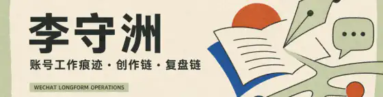
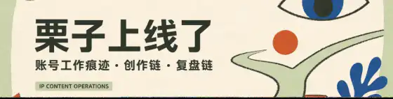
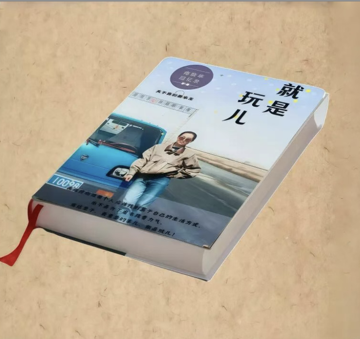
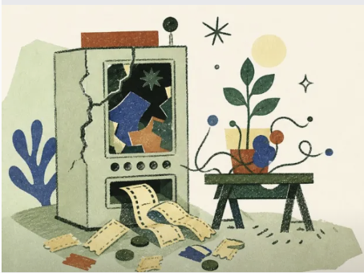

GLASS MARBLE STUDIO
MEMOIR ARCHIVE
MEMOIR ARCHIVE
1本书
从一个人的讲述，到一本回忆录
从开始采访到成书发布，跨越了两个季节。每个章节都经过重新梳理、重写和继续挖掘。这里留下了当时的采访照片、回忆录成品、工作室介绍，以及正式签约客户的反馈。
“我果断下单，也出于信任和支持，希望你可以把这件事一直做下去。”
工作室第一位正式签约客户 / 当时的朋友圈记录


我对人的兴趣，一直在变成具体的作品。从回忆录工作室，到访谈、长文和短片。

《就是玩儿》· 成书发布读创作故事 ↗我创办过玻璃弹珠工作室，用 AI 辅助为老年人写回忆录。从面对面采访，到写作、审稿、反复修改，最后做成一本可以翻阅的书。这个过程，也被我拍成短片、写成公众号文章。
从一个人的讲述，到一本回忆录
从开始采访到成书发布，跨越了两个季节。每个章节都经过重新梳理、重写和继续挖掘。这里留下了当时的采访照片、回忆录成品、工作室介绍，以及正式签约客户的反馈。
“我果断下单，也出于信任和支持，希望你可以把这件事一直做下去。”
工作室第一位正式签约客户 / 当时的朋友圈记录
我给自己定下 100 场一对一访谈，从保险切入，去听一个人如何理解风险、家庭、疾病、死亡、职业和自由。
百人计划已完成 15 场
我想知道一个人为什么犹豫、害怕，又因为什么愿意信任。受访者谈起创业、女性资产、养老、疾病、死亡与人生选择；有人在我面前落泪，也有人第一次愿意重新理解保险。
“以保险为工具，连接不同圈层的人，缩小信息差。”
受访者反馈 / 第 15 场
我把访谈中听到的经历、问题和自己的思考整合成保险公众号文章。朋友圈留下每一场深聊的记录，公众号继续把这些材料展开，写成更多人能读到的内容。
长期写公众号，累计 150 多篇文章。写自己的生活，也写工作中遇到的人和事。
“她在向一个不存在的人道歉。”
奶奶把 AI 男人的名字记进小本子，让我逐个回私信。我查账号、拨通“红娘”的电话，听见对方索要介绍费。挂断后，她替对方辩护，却担心自己不值得被喜欢。我能识破骗局，又拿不出真实的陪伴替代它。
你们在找 AI 时代里的普通人故事，这篇文章就是一个现成选题。AI 已经进入一个普通老人的爱情、孤独和晚年生活。我想在卡兹克团队继续采访更多老人、家属和 AI 陪伴产品开发者，把这个亲历故事做成一篇能被广泛讨论的人物特稿。
从大理到成都，我一直在写生活。写遇见的人、看的展，也写自己的感受和变化。
点击封面，看我怎么面对镜头、进入生活和创造东西。
点击封面，直接看作品 ▶我自己用、自己试，也自己做东西。AI 已经进入我的内容工作和个人项目。
这一卷胶片记录已经落地的作品、AI 系统和业务结果。
横向滑动胶片 →
我持续把好奇心用在具体的事情上，写文章、做内容，也自己做工具。

问题在于，AI改变了写作的劳动关系。
作者要知道自己为什么说这句话，甲方只需要说这句话还不够好。
如果你先被现实刺到，先有自己的反应，先写下那句粗糙的判断，再让 AI 帮你整理、追问、补充、打磨，那你确实可以对观点负责。
在打开 AI 之前，先自己写下三样东西。
我看见了什么，
我身体上有什么反应，
我最想反驳的是什么。
写作最开始的地方，是你被这个世界碰了一下之后，没有立刻躲开。
从没走过直线只有一条歪歪扭扭的来时路
高中时，开始想拍电影，那时候我以为人生会按一个目标展开，后来考了两次北京电影学院都失败了，发现目标也会背叛人。不过也很早开始训练审美、叙事、镜头感和对人的观察，也在大学期间和毕业后拍了一些小短片。